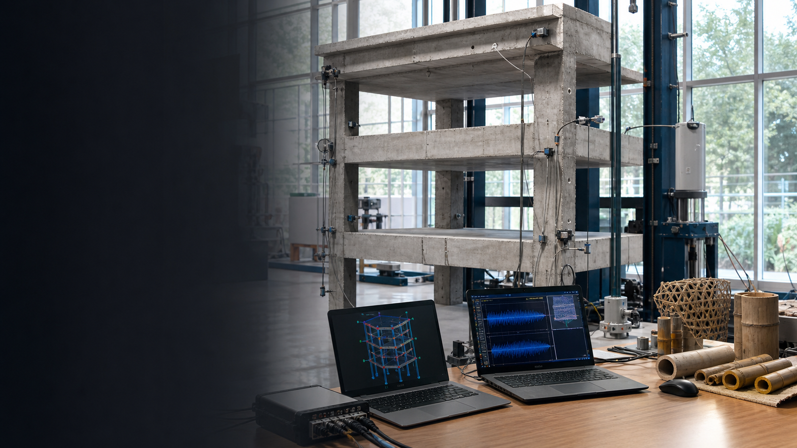
Structural & Earthquake Engineering
Kishor Timsina, PhD
Assistant Professor at Madan Bhandari University of Science and Technology (MBUST), working on sustainable and resilient infrastructure through advanced structural engineering, local materials, seismic safety, monitoring, retrofitting, AEM, FEM, and multi-hazard risk reduction.
- Current Role
- Assistant Professor, MBUST
- Doctorate
- The University of Tokyo
- Focus
- Sustainable and resilient infrastructure through advanced structural engineering and local innovation.
About
Researcher, educator, and practitioner for resilient structures.
Dr. Kishor Timsina is an Assistant Professor and Coordinator of the Sustainable and Resilient Infrastructure Program at Madan Bhandari University of Science and Technology (MBUST). His work supports safer buildings and infrastructure in Nepal and beyond by connecting experimental research, numerical modelling, field assessment, and locally appropriate innovation.
His research focuses on stone and brick masonry buildings, bamboo and timber structures, innovation in building materials, structural health monitoring of masonry and heritage structures, low-cost retrofitting techniques, rural transportation including trails and trekking routes, and multi-hazard risk assessment with risk-sensitive land-use planning for sustainable rural settlements.
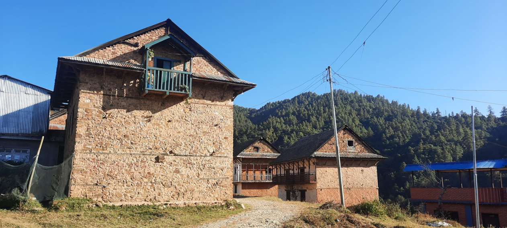
Research Interests
Sustainable and resilient infrastructure through advanced structural engineering and local innovation.
Performance of Structures
Experimental and numerical research on existing and new Nepali building systems, including masonry, RCC, bamboo, timber, rural structures, heritage structures, and other cost-effective local options.
Structural Health Monitoring
Health monitoring, vulnerability assessment, ambient vibration testing, numerical model updating, and field-calibrated evaluation of RC, masonry, and heritage buildings.
Retrofitting of Structures
Low-cost retrofitting methods for vulnerable non-engineered RC, masonry, and traditional buildings through experimental and numerical study.
Applied Element Method and FEM
Development, improvement, and implementation of AEM and finite element analysis for collapse simulation, soil-structure interaction, nonlinear response, and model updating.
Bamboo, Timber, and Building Materials
Structural characterization of bamboo and timber, mass timber potential, prefabricated bamboo wall panels, and innovation in sustainable, locally available building materials.
Multi-Hazard Risk Reduction
Risk assessment, risk-sensitive land-use planning, rural transportation, trails, trekking routes, resilient settlements, preparedness, and practical mitigation strategies.
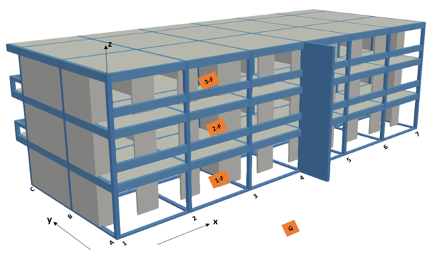
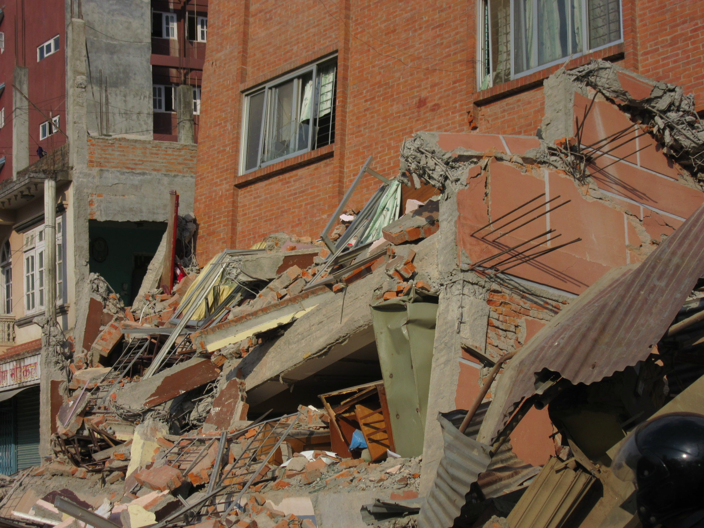
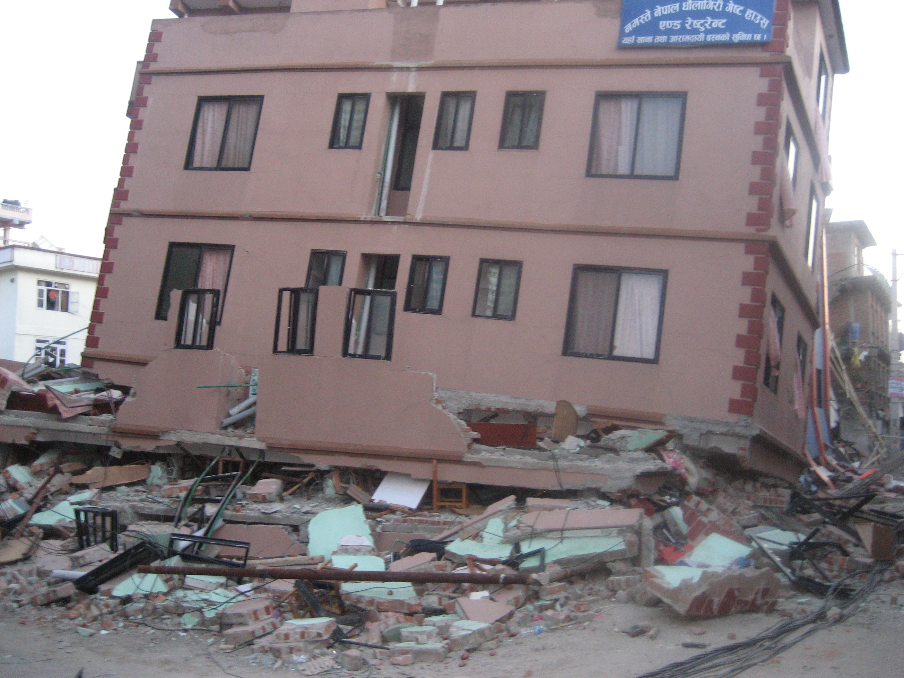
SRI Lab at MBUST
Experimental facilities for bamboo, masonry, and resilient construction research.
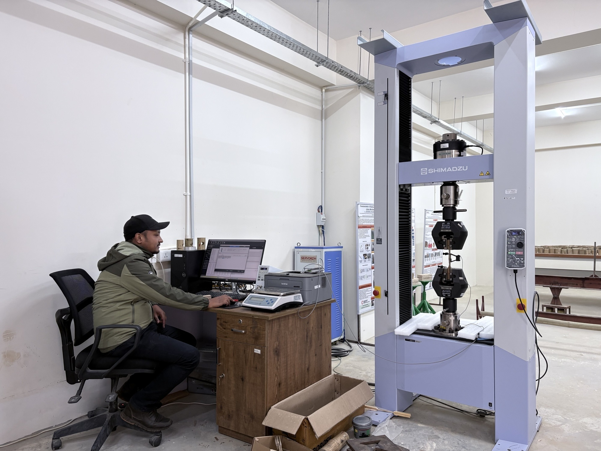
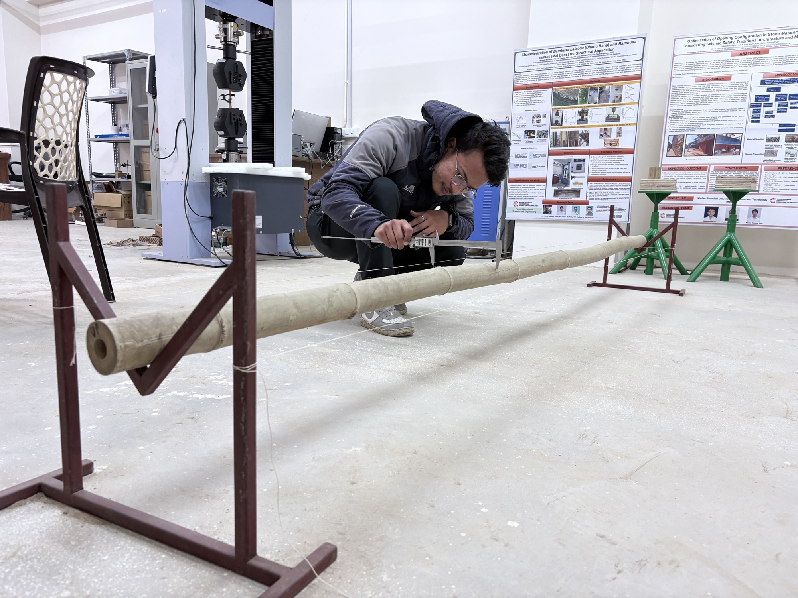
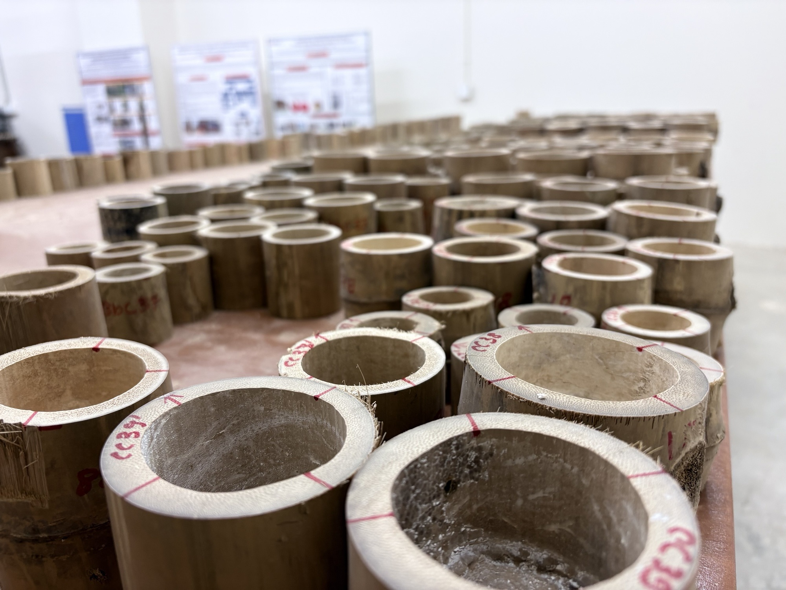
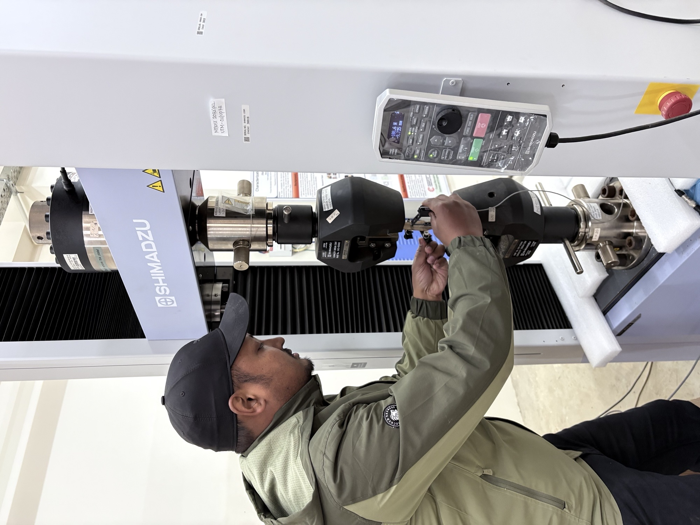
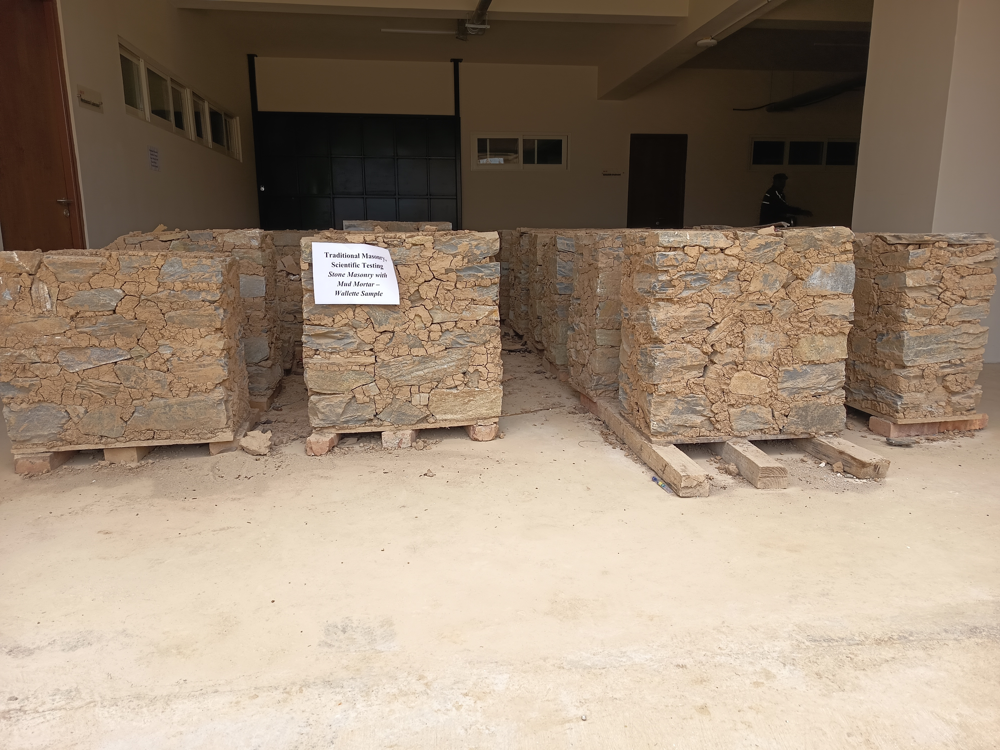
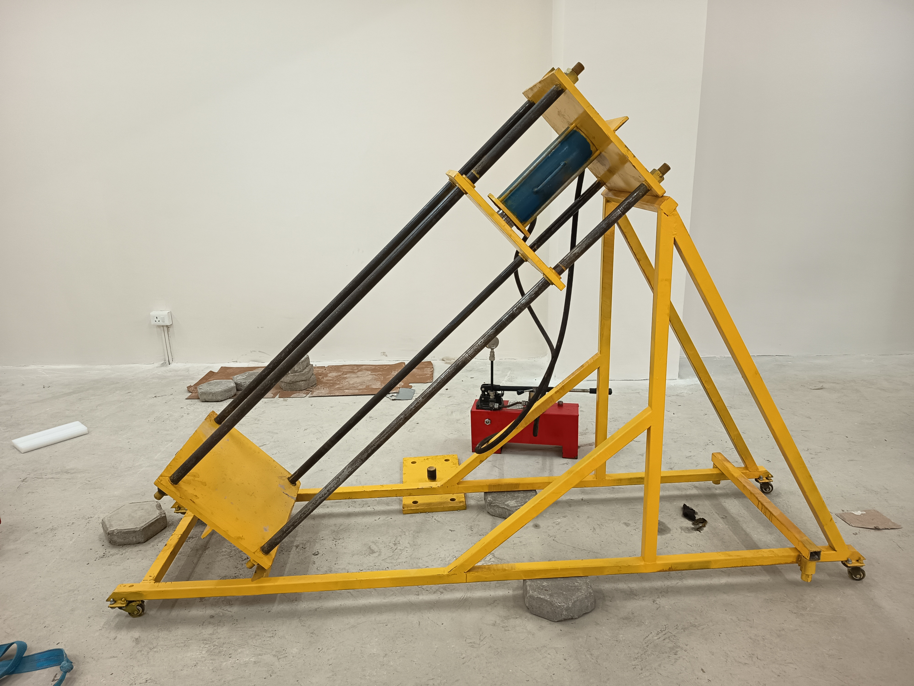
Ongoing Research at MBUST
Student research linking local materials, heritage safety, and computational simulation.
Characterization of Nepalese bamboo for structural application
Comprehensive geometric and mechanical characterization of Bambusa nutans and Bambusa balcooa to support code-ready bamboo grading, structural design, treatment facilities, and construction industry use.
Optimization of openings in stone masonry homestays
Numerical optimization of wall openings to balance seismic safety, traditional architecture, daylight, ventilation, and comfort in rural stone masonry homestays.
3D Applied Element Method for collapse simulation in stone masonry
Development of a 3D AEM-based numerical tool for simulating cracking, block separation, contact, impact, and progressive collapse of stone masonry structures.
Seismic performance of heritage structures with timber bands and joints
Field surveys, microtremor testing, and AEM analysis to evaluate timber bands and joints in heritage masonry buildings and propose low-carbon strengthening strategies.
Optimization of mud mortar for stone masonry using natural additives
Laboratory and computational study of locally available additives, lime, and plant-based fibers to improve mud mortar strength, bonding, ductility, durability, and seismic performance.
Performance evaluation of prefabricated bamboo wall panels
Experimental evaluation of low-cost bamboo wall panels with flattened bamboo sheets, bracing, wire mesh, and mud-lime mortar for resilient rural and peri-urban housing.
Projects & Funding
Current work connects sustainable materials, resilient housing, and heritage reconstruction.
Cost-effective Local Housing Technology and Construction
Enhancing seismic resilience of stone masonry in mud mortar buildings in Nepal.
Evaluating the Potential of Mass Timber
Assessment of mass timber for residential buildings and industrial development in Nepal.
Sustainable and Resilient Reconstruction of Traditional Stone Masonry Buildings
Research grant supporting resilient reconstruction approaches for stone masonry buildings in mud mortar.
Structural Characterization of Bambusa balcooa and Bambusa nutans
Experimental research on bamboo species for structural applications.
Research and Development in Bamboo-Related Structural Applications
Long-term partnership for sustainable bamboo research and development.
Experience
From field implementation to research leadership.
Assistant Professor & Coordinator, Sustainable and Resilient Infrastructure Program
Madan Bhandari University of Science and Technology (MBUST). Leads teaching, supervision, research projects, and academic program coordination in resilient infrastructure.
Structural Engineer / Deputy Program Manager
National Society for Earthquake Technology-Nepal (NSET). Coordinated technical support for resilient communities, multi-hazard risk reduction, building permit systems, and retrofitting work.
Civil Engineer / Program Coordinator
NSET. Worked on building code implementation, damage assessment after the 2015 Nepal earthquake, seismic vulnerability assessment, trainings, and earthquake-resistant construction.
Education
Academic training in Nepal and Japan.
Doctoral Degree in Civil Engineering
The University of Tokyo. Thesis: Development of Model Updating in 3D AEM to Improve the Numerical Modeling of Existing RC Frame Buildings.
Master's Degree in Civil Engineering
The University of Tokyo. Thesis: Optimized retrofitting of soft-storey RC buildings in Nepal using numerical optimization.
Bachelor's Degree in Civil Engineering
Institute of Engineering, Pulchowk Campus, Tribhuvan University. Final-year thesis on earthquake-resistant building analysis and design.
Courses Taught
Graduate teaching and research mentorship.
Teaching Courses
- FBM-EL-577 Applied Element Modelling of Structures
- SRI-EL-579 Finite Element Modelling of Structures
- SRI-EL-583 Structural Evaluation and Retrofitting Methods for Existing Structures
- SRI-EL-578 Advanced Structural Dynamics and Vibration Control
- FBM-CR-501 Fundamentals of Forest Biomaterials Science (Wood Mechanics)
Supervision Themes
- Bamboo characterization for structural applications
- Seismic safety of stone masonry homestays
- Heritage masonry structures, timber bands, and joints
- Soft-storey retrofitting and masonry infill frames
- Data-driven numerical model updating and AEM solver development
Journal Papers
Publications spanning masonry, soft-storey buildings, seismic site characterization, AEM, and soil-structure interaction.
Simplified engineering geomorphic unit-based seismic site characterization of the detailed area plan of Dhaka city, Bangladesh
Scientific Reports 13, 11151, 2023.
DOI: 10.1038/s41598-023-37628-6Shaking table tests of a one-quarter scale model of concrete hollow block masonry houses retrofitted with fiber-reinforced paint
Scientific Reports 14, 8041, 2024.
DOI: 10.1038/s41598-024-58365-4Sociotechnical evaluation of the soft story problem in reinforced concrete frame buildings in Nepal
Journal of Performance of Constructed Facilities 35(4), 04021019, 2021.
DOI: 10.1061/(ASCE)CF.1943-5509.0001582Enhancing seismic resilience in weak masonry units: the impact of rebar reinforcement in concrete hollow block masonry structures
Journal of Disaster Science and Management 1(1), 4, 2025.
DOI: 10.1007/s44367-025-00004-4Retrofitting solution for soft story mitigation in reinforced concrete frame buildings: A socio-technical approach using numerical optimization
Journal of Earthquake and Tsunami 18(02), 2350040, 2024.
DOI: 10.1142/S1793431123500409A comprehensive field study to examine the complications in soft story problem in Nepal
Seisan Kenkyu 71(6), 1059-1063, 2019.
DOI: 10.11188/seisankenkyu.71.1059Development of a numerical optimization framework for solving soft-storey problem in reinforced concrete frame buildings
Seisan Kenkyu 71(4), 813-823, 2019.
DOI: 10.11188/seisankenkyu.71.813Upgradation of 2D applied element method (AEM) for soil-structure interaction (SSI)
Progress in Engineering Science 2(2), 100071, 2025.
DOI: 10.1016/j.pes.2025.100071Enhancing Seismic Resilience of Soft-Storey Buildings through Optimized Reinforced Concrete Infill Solutions
Engineered Science 35, 1513, 2025.
DOI: 10.30919/es1513Evaluative literature review of numerical analysis methods for soil structure interaction
Discover Geoscience 4(1), 173, 2026.
DOI: 10.1007/s44288-026-00546-xRecognition
Scholarships and academic awards.
Furuichi-Kimitake Prize
Outstanding Master's Thesis, The University of Tokyo, 2019.
MEXT Scholarship
Doctoral Degree, The University of Tokyo, 2020 - 2023.
ADB-JSP Scholarship
Master's Degree, The University of Tokyo, 2017 - 2019.
Contact